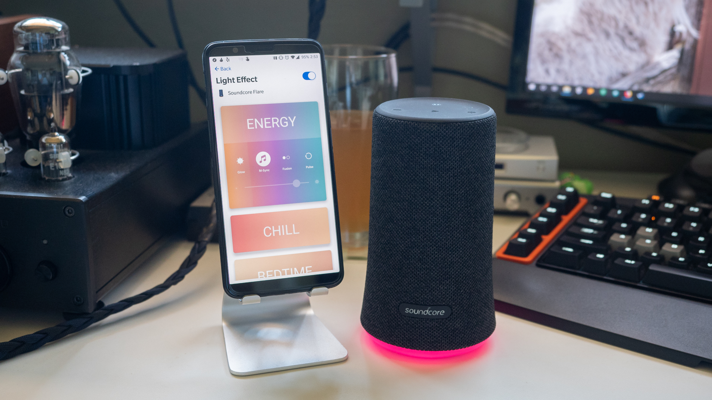

Sonos Move
Med sonos move får du en fantastisk bra høytaler, med veldig bra lyd som tilpasser seg omgivelsene, så denne fungerer både innendør og utendørs. Den tåler i tillegg regn og snø. Bruk Sonos appen, apple air play eller stemmen for å styre den.
Vekt: 3 kg
Batteritid: 10 timer
Pris: 3990kr
Kjøp den her
Pros
- - Låter Kjempebra
- - Allsidig
- - Gode tilkoblingsmuligheter
- - IP56 verfisering
Cons
- - Tung
- - Dyr


JBL FLIP 5
Med JBL Flip 5 for du en enkel og morsom høyttaler. Dett er en høyttaler med veldig god lyd, og det kompakte og vanntette designet gjør at den er enkel å ta med seg overalt. Vekt: 540gBatteritid: 12 timer
Pris: 990kr
Kjøp den her
Pros
- - Attraktiv og morsom lyd
- - Brukervennelig
- - Vanntett
- - En fin pris
Cons
- - Ikke 3,5mm inngang
- - Ikke mikrofon til telefonsamtaler


UE BOOM 3
UE BOOM 3 er en robust og slitesterkt høyttaler, med et kraftig lydbilde, og dyp bass. Denne er også lett å ta med seg overalt, og er både vann -og støvsikker.
Vekt: 608g
Batteritid: 15 timer
Pris: 1399kr
Kjøp den her
Pros
- - Vanntett -og støvtett
- - Dypt og kraftig lydbilde
- - God batteritid
Cons
- - Litt for dyr
- - Ingen støtte til Spotify connect, Chromecast, WiFi eller Airplay
- - Lader fortsatt med microUSB, og ikke USB-C
ANKER SOUNDCORE FLARE
ANKER SOUNDCORE FLARE er en bra høyttaler, til en ikke altfor stiv pris. Den er praktisk og brukervennelig, og tilbyr et ganske bra lydbilde. Det er en robust høyttaler som kantas med overalt, ettersom, og tåler vann og annet søl.
Vekt: 500g
Batteritid: 12 timer
Pris: 853kr
Kjøp den her
Pros
- - God lyd i forhold til størrelsen
- - Flott mobilapp
- - Vanntett
Cons
- - Skarp lyd ved høyt volum
- - Ikke altfor bra batteritid
- - Dårlig bass

Kilder
https://global.techradar.com/no-no/best/beste-bluetooth-hoyttalerehttps://www.techradar.com/reviews/ultimate-ears-boom-3
https://www.techradar.com/reviews/anker-soundcore-flare
https://www.elkjop.no/product/lyd-hi-fi/hoyttalere/48617/sonos-move-tradlos-hoyttaler-sort
https://www.elkjop.no/product/lyd-hi-fi/hoyttalere/tradlose-barbare-hoyttalere/32539/jbl-flip-5-barbar-tradlos-hoyttaler-sort